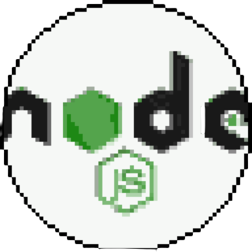
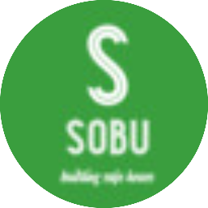
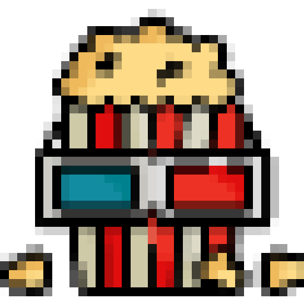
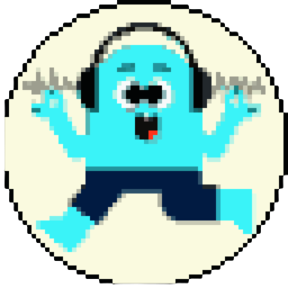

SOLVIO ERP (Mobile and Desktop)
SOLVIO is the name we give to our team and we are proud to have signed a project developed by the team. Solvio ERP is our application that we have developed together with desktop-mobile, which facilitates the resource management, warehouse tracking and order services of institutions, and we are constantly adding new features.
ETSY Product Analyzer
It is an analysis program that evaluates the product by examining the reviews of Etsy products.
Portfolio Admin Client
A streamlined and user-friendly web and desktop application that empowers clients to manage and track their investment portfolios with ease. This secure platform offers real-time data visualization, portfolio analytics, and intuitive tools to make informed financial decisions. Enhance your financial journey with our Portfolio Admin Client Project.

Portfolio Backend
Users can connect their portfolio websites through a single backend and organize their portfolios through the "Portfolio Admin Client".

SOBU
This is a GDSC Solution Challenge project. Recently, natural disasters have been increasing in Turkey and in the world. Especially earthquakes. After the recent earthquakes in our country, there has been a need for people to know how safe their homes are. There is also a great need for this verification and the provision of honest data sources. Based on this area, SOBU offers a service where people can have their homes, buildings and campuses tested or verify how safe the homes they rent are.

MMOVIE
I have been experiencing some difficulties when my cousins, friends, and siblings suggesting a movie to me, such as forgetting and missing messages. Thanks to the application we may have a digital movie archive, and we can share movies in easier way, we can create wish list and favourites list. I hope it would work as expected.

MEMEapp
This project for improving our react-native with expo skills. We created MEMEapp. Users can add meme sounds, images and memes and share each others and users can create own memes.

Yap-yee
Yap-ye is a user-friendly mobile application developed to suggest recipes and help people make shopping lists. The application was developed using Dart and Flutter technologies and was created with teamwork.
BESY
Besy is a mobile application that enables livestock owners to conveniently monitor the number, types, and mating schedules of their animals, track diseases, medicines, and vaccination schedules, and calculate the overall potential profit or loss of their livestock.

Betul Portfolio
This is the website I coded for a close acquaintance. It is still under construction.